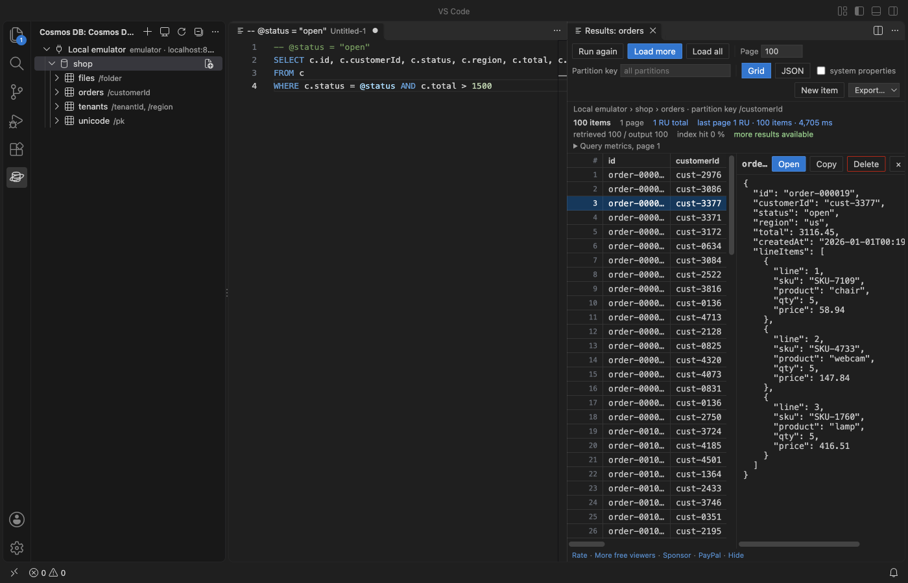

Open files in VS Code and Cursor / Tables and data
Copy a Cosmos DB container to another container or account
Copy Container in Cosmos DB Client streams every item of a container into another container, in the same account, in another account or in the local emulator. A new target container gets the same partition key and indexing policy as the source, and the progress shows the RU of the reads and the writes. The source is only read. It is a Zovo Pro tool (USD 19 once) with 3 free tries. Queries, editing, export and import stay free.
Free, MIT license. Extension ID zovo.zovo-cosmos-db-client, version 0.1.2. Needs VS Code 1.90.0 or newer.

Steps in VS Code
- Install Cosmos DB Client from the Marketplace, or press Ctrl+P (Cmd+P on macOS) and run
ext install zovo.zovo-cosmos-db-client. - Add both connections in the Cosmos DB view, for example production with its connection string and the local emulator with Connect to Local Emulator.
- Right-click the source container and pick "Zovo Pro: Copy Container".
- Pick the target connection, then the target database or New database.
- Type the target container name. A new name creates the container with the same partition key and indexing policy. An existing container must have the same partition key.
- Click Copy. Items are read 500 per page and written with bulk upserts. The progress shows the items read and written and the RU, and the last message gives the totals.
Where Zovo Pro saves time
Connections, queries with RU on every page, editing with an ETag check, export of a whole query to JSON, JSONL or CSV and import of JSON or JSONL in batches are free. Export and then import is the free way to move a small container by hand.
Moving a container by hand means an export, a new container with the right partition key and indexing policy, and an import. Copy Container does it in one run and shows the RU it used on both sides. The other Pro tool, Query Cost Report, runs a query to the end and writes the total RU, index advice and hints such as a missing partition key filter.
With Copy Container (Zovo Pro)
- Right-click a container in the Cosmos DB Explorer and pick "Zovo Pro: Copy Container", or run "Copy Container to Another Account (Pro)" from the Command Palette.
- Pick the target connection, database and container name, then click Copy.
- A try counts only when the copy finishes. The first 3 on a computer are free.
Copy Container works 3 times on your computer before it asks for a license, and a try counts only when you get a result. Opening a file shows no popup and no countdown.
Zovo Pro costs USD 19 once. It is not a subscription, and it turns on the Pro tools in every Zovo extension, not only Cosmos DB Client. After a card payment (Stripe) your license key shows on the next page. In VS Code, run "Zovo Pro: Enter Zovo Pro license key" from the Command Palette and paste it. The key is checked on your computer, with no network call. With GitHub Sponsors, pick the "$19 one time" tier, then run "Zovo Pro: I already paid: unlock with GitHub Sponsors" and sign in with the same GitHub account. With PayPal, send USD 19 with "Zovo Pro" in the note and the key comes by email within a day.
A team of 5: USD 59 once, by card or by PayPal. Every rule and every Pro tool is on the Zovo Pro page.
Steps in Cursor, Windsurf or VSCodium
- Open the Extensions view with Ctrl+Shift+X (Cmd+Shift+X on macOS).
- Search for
zovo.zovo-cosmos-db-clientand click Install. Cursor, Windsurf and VSCodium install from Open VSX, where it is published aszovo/zovo-cosmos-db-client. - If your editor has no gallery, download the .vsix from the Open VSX page and run "Extensions: Install from VSIX...".
- Then use it the same way as in VS Code.
What Cosmos DB Client handles
- A copy into the same account, another account or the local emulator.
- A new database on the target, made when you pick New database.
- Hierarchical partition keys, copied as they are.
- Items with the same id and partition key on the target, replaced by the copy.
What it does not do
- Only items are copied. Stored procedures, triggers and user-defined functions are not.
- An existing target container must have the same partition key, or the copy stops before it writes.
- Cancel stops the copy. Items already written stay in the target.
- Reads and writes use RU on both accounts.
Other options
- Azure Cosmos DB Data Migration Tool. A free open-source command line tool from the Cosmos DB team that moves data between Cosmos DB, JSON files and other stores.
- Container copy jobs in Azure. Azure can also run container copy jobs from the Azure CLI. They run in Azure, not in VS Code. See the Microsoft docs for the account types they support.
Install counts and Open VSX status were checked on 13 November 2026. Descriptions in quotes are the extensions' own.
Questions
Does it change the source container?
No. The source is only read. Items are written to the target only.
What if the target already has some of the items?
Items with the same id and partition key are replaced, because the copy writes with upserts. Other items in the target stay.
Can I copy production into the local emulator?
Yes. Add the emulator with Connect to Local Emulator and pick it as the target connection.
Does it work in Cursor or Windsurf?
Yes. Cursor, Windsurf and VSCodium install extensions from Open VSX. Search for the extension in their Extensions view and install it there.
More about Cosmos DB Client
Read the Cosmos DB Client page for every feature and setting, or the source code on GitHub.
Related guides
- See the request charge (RU) of a Cosmos DB query
- Open an Excel .xlsx file in VS Code
- Open an Excel file in Cursor
- See a CSV file as a table in VS Code
Zovo Pro and support
Zovo Pro: USD 19 once, every Zovo viewer. It turns on the Pro tools in this extension and in the other Zovo extensions you use. The free features stay free.
After a card payment your license key shows on the next page. Paste it with the command "Zovo Pro: Enter a key".
You can also support the work with no Pro:
Need your format supported?
Open a format request with a sample file, and I reply there whether it can be done. For USD 299 once, through this GitHub Sponsors tier, I add your file format or a missing feature to this extension, with tests, within 7 days.